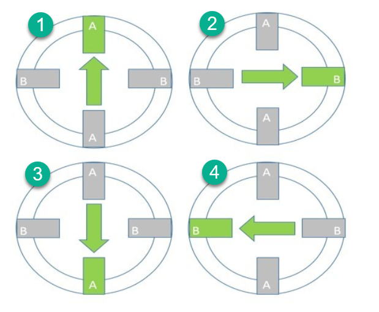

De stappenmotor
Een stappenmotor draait niet vanzelf rond. Hij zet één stap per keer, en enkel wanneer jij de spoelen in de juiste volgorde bekrachtigt. Doe je niets, dan blijft hij precies staan waar hij staat.
Dat maakt hem het tegenovergestelde van een DC motor. Een DC motor zet je aan en dan draait hij, maar je weet nooit hoe ver. Een stappenmotor beweegt alleen als jij hem stap voor stap voortduwt, en dus weet je exact hoe ver hij gedraaid heeft: je hebt de stappen zelf geteld. Daarom zitten ze in printers, plotters en 3D-printers, overal waar een positie moet kloppen zonder dat er een sensor aan te pas komt.
| Wat je stuurt | Weet hij waar hij staat? | |
|---|---|---|
| Servo | Een hoek | Ja, hij regelt zelf bij |
| DC motor | Spanning, dus snelheid | Nee |
| Stappenmotor | Stappen, één voor één | Ja, zolang jij ze telt |
Twee spoelen
Binnenin zitten twee spoelen, die we A en B noemen, en daartussen een magnetische rotor. Bekrachtig je spoel A, dan draait de rotor naar spoel A toe en blijft daar hangen. Bekrachtig je vervolgens spoel B, dan draait hij een kwartslag verder naar B. Zo trek je hem stap voor stap rond.
Elke spoel kan je in twee richtingen bekrachtigen, want de stroom kan er twee kanten door. Dat geeft vier standen om naartoe te trekken: A in de ene richting, B in de ene richting, A in de andere, B in de andere. En omdat je per spoel de stroomrichting moet kunnen kiezen, heb je per spoel een H-brug nodig. Twee spoelen, twee bruggen, en dat is precies wat er in één L293D zit.
In TinkerCAD: vier leds in plaats van een motor
TinkerCAD heeft geen bruikbaar model van een stappenmotor. We vervangen de motor daarom door vier leds, twee per twee anti-parallel geschakeld: elk paar staat op de plaats van één spoel.

Anti-parallel wil zeggen: naast elkaar, maar omgekeerd. Loopt de stroom de ene kant op door het paar, dan brandt de ene led. Loopt hij de andere kant op, dan brandt de andere. Zo zie je aan welke led brandt niet alleen of een spoel bekrachtigd is, maar ook in welke richting. Een correct draaiende motor herken je aan leds die netjes in de rondte oplichten.
Omdat een echte stappenmotor ook maar twee spoelen heeft, en dus maar vier draden. Met vier losse leds zou je vier onafhankelijke uitgangen simuleren die in de echte motor niet bestaan, en dan schrijf je code die op een echte motor niet werkt.
Aansluiten op de L293D
Beide spoelen hangen elk over één brug van de L293D:
| Arduino | L293D-ingang | L293D-uitgang | Waar het naartoe gaat |
|---|---|---|---|
| pin 2 | 1A (pin 2) | 1Y (pin 3) | de ene kant en de andere kant van spoel A |
| pin 3 | 2A (pin 7) | 2Y (pin 6) | |
| pin 4 | 3A (pin 10) | 3Y (pin 11) | de ene kant en de andere kant van spoel B |
| pin 5 | 4A (pin 15) | 4Y (pin 14) |
De twee enable-pinnen (1,2EN en 3,4EN) hang je gewoon vast aan 5 V: bij een stappenmotor wil je de bruggen altijd actief hebben. Je regelt de snelheid hier immers niet met PWM maar met de tijd tussen twee stappen.
Full step
De eenvoudigste manier om te sturen heet one phase, full step: je bekrachtigt telkens precies één spoel, in vier standen na elkaar.

Vertaald naar de vier Arduino-pinnen wordt dat:
| Stap | pin 2 | pin 3 | pin 4 | pin 5 | Wat er gebeurt |
|---|---|---|---|---|---|
| 1 | HIGH | LOW | LOW | LOW | Spoel A, ene richting |
| 2 | LOW | LOW | HIGH | LOW | Spoel B, ene richting |
| 3 | LOW | HIGH | LOW | LOW | Spoel A, andere richting |
| 4 | LOW | LOW | LOW | HIGH | Spoel B, andere richting |
Kijk goed naar de tabel: je wisselt telkens van spoel. Zou je eerst spoel A in beide richtingen doen en dan pas spoel B, dan springt de rotor van 0 naar 180 graden en weer terug naar 90. Hij draait dan niet rond, hij trilt alleen maar heen en weer. Dat is de klassieke fout, en aan je leds zie je het meteen: die moeten in de rondte oplichten, niet om de beurt van links naar rechts.
Half step
Bij full step trek je de rotor telkens een hele stap verder. Je kan hem ook halverwege laten stoppen, door twee spoelen tegelijk te bekrachtigen: de rotor gaat dan tussen die twee in staan. Wissel je die twee soorten standen af, dan krijg je acht standen in plaats van vier, en dus twee keer zoveel stappen per omwenteling.

| Stap | pin 2 | pin 3 | pin 4 | pin 5 | Wat er gebeurt |
|---|---|---|---|---|---|
| 1 | HIGH | LOW | LOW | LOW | Alleen spoel A |
| 2 | HIGH | LOW | HIGH | LOW | A en B samen |
| 3 | LOW | LOW | HIGH | LOW | Alleen spoel B |
| 4 | LOW | HIGH | HIGH | LOW | A en B samen |
| 5 | LOW | HIGH | LOW | LOW | Alleen spoel A |
| 6 | LOW | HIGH | LOW | HIGH | A en B samen |
| 7 | LOW | LOW | LOW | HIGH | Alleen spoel B |
| 8 | HIGH | LOW | LOW | HIGH | A en B samen |
Vergelijk stap 1, 3, 5 en 7 van half step met de vier stappen van full step. Het zijn dezelfde. Half step is dus gewoon full step met tussen elke twee stappen een extra stand waarin beide spoelen aan staan.
De stappentabel in code
Die tabellen kan je letterlijk overnemen als array. Elke rij is één stap, en per rij staat er voor elke motorpin een 1 of een 0. Dat leest een pak beter dan twintig digitalWrite()-regels onder elkaar, en het maakt de volgende oefeningen bijna gratis.
const int motorPinnen[] = {2, 3, 4, 5};
// Elke rij is één stap. Per rij staat er voor elke motorpin een 1 of een 0.
const int fullStep[4][4] = {
{1, 0, 0, 0}, // spoel A, ene richting
{0, 0, 1, 0}, // spoel B, ene richting
{0, 1, 0, 0}, // spoel A, andere richting
{0, 0, 0, 1} // spoel B, andere richting
};Eén stap zetten wordt dan een lusje over de vier pinnen:
void zetStap(int stap)
{
for (int pin = 0; pin < 4; pin++)
{
digitalWrite(motorPinnen[pin], fullStep[stap][pin]);
}
}En daarmee heb je meteen drie dingen in handen:
- Draaien is de stap ophogen en weer bij 0 beginnen na de laatste rij. De restoperator
%doet dat in één regel. - Van richting veranderen is de tabel de andere kant op doorlopen, dus aftellen in plaats van optellen.
- Sneller of trager is de wachttijd tussen twee stappen aanpassen. Meer moet dat niet zijn.
Wij sturen telkens één spoel tegelijk aan, en dat heet voluit one phase, full step. Je kan ook altijd twee spoelen samen bekrachtigen. De motor heeft dan evenveel stappen, maar meer koppel, en hij trekt ook dubbel zoveel stroom. In dit labo blijven we bij one phase.